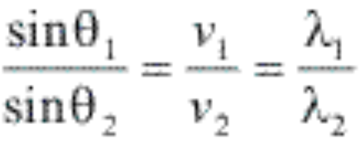
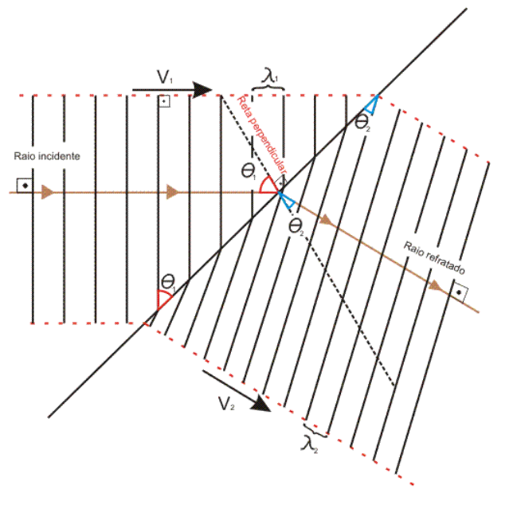
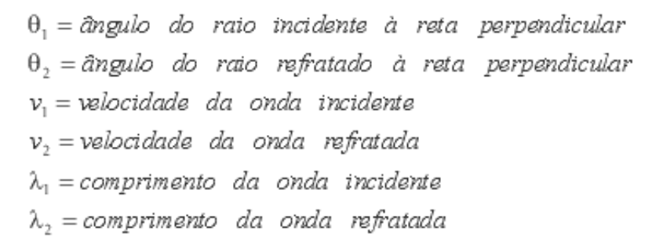
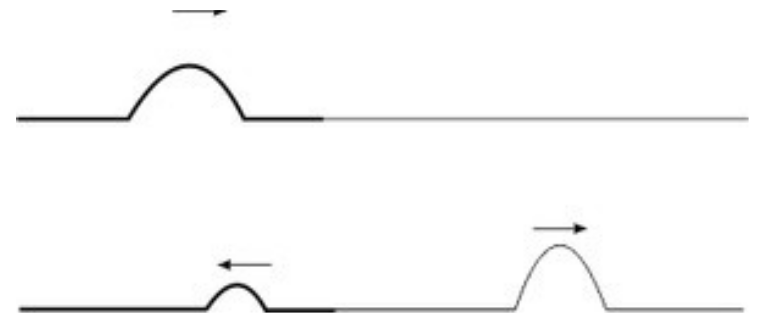

É o fenômeno que ocorre quando uma onda passa de um meio para outro de características distintas, tendo sua direção desviada. Independente de cada onda, sua frequência não é alterada na refração, no entanto, a velocidade e o comprimento de onda podem se modificar. Através da refração é possíveis explicar inúmeros efeitos, como o arco-íris, a cor do céu no pôr-do-sol e a construção de aparelhos astronômicos.
A refração de ondas obedece duas leis que são:
1ª Lei da Refração: O raio incidente, a reta perpendicular à fronteira no ponto de incidência e o raio refratado estão contidos no mesmo plano.
Lei de Snell: Esta lei relaciona os ângulos, as velocidades e os comprimentos de onda de incidência de refração, a lei enuncia que: na refração, o produto do índice de refração do meio, no qual se encontra o raio pelo seno do ângulo que esse raio forma com a reta normal à interface no ponto de incidência, é constante.
Aplicando a lei:
Conforme indicado na figura:
Como exemplos da refração, podem ser usadas ondas propagando-se na superfície de um líquido e passando por duas regiões distintas. É possível verificar experimentalmente que a velocidade de propagação nas superfícies de líquidos pode ser alterada modificando-se a profundidade deste local. As ondas diminuem o módulo de velocidade ao se diminuir a profundidade.
No caso de um pulso unidimensional em uma corda, a refração pode acontecer quando unimos duas cordas de diferentes densidades, por exemplo. É bom lembrar que a velocidade de propagação é maior na corda menos densa
Se o pulso se propaga da corda menos densa para a mais densa, a segunda corda se comporta como um ponto fixo para a primeira, e o pulso refletido sofre inversão de fase.
Se o pulso se propaga da corda mais densa para a menos densa, a segunda corda se comporta como um ponto livre para a primeira, e o pulso refletido não sofre inversão de fase.